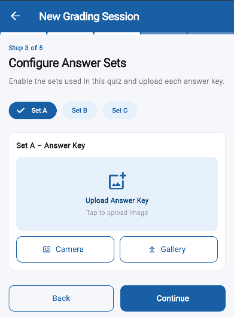
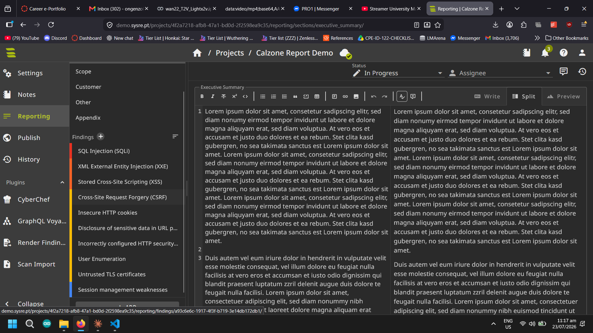
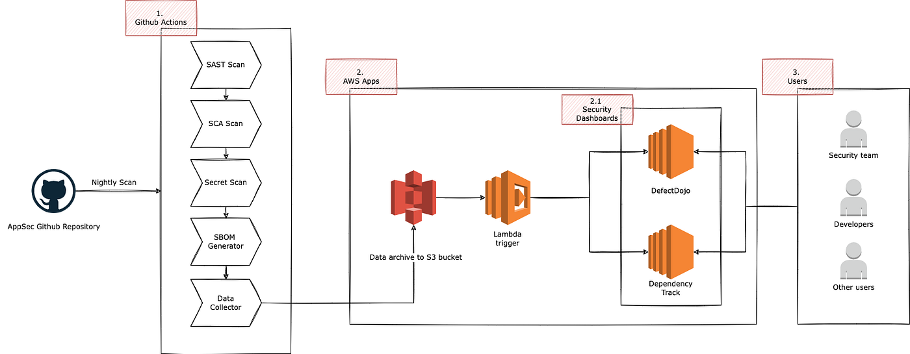
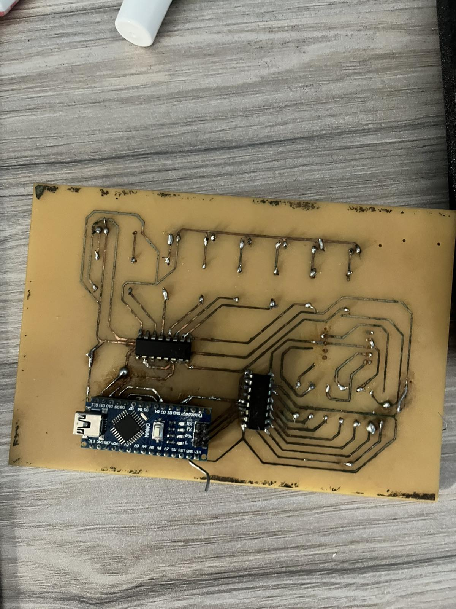
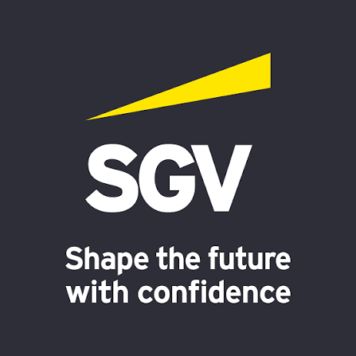
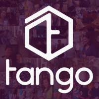
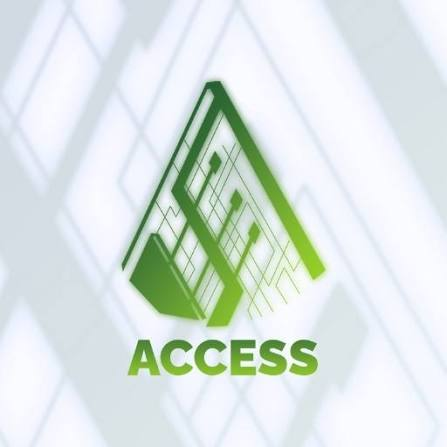

Career E-Portfolio · Sheet 1 of 1
Computer Engineering Student — Cybersecurity & AI Systems
I'm Enzo, a Computer Engineering student at De La Salle University Manila, wiring together two worlds that don't always talk to each other: hardware and security. On one side I've built circuits and PCBs and trained image-recognition models; on the other, I've spent internships inside cybersecurity teams learning how systems get attacked and defended in practice.
My most recent stop was SGV & Co.'s Technology Consulting group, where I worked across cyber strategy, risk, identity and access management, and resilience — including a project that used a local LLM to streamline pentest reporting, and another that built an AI pipeline for application security. Before that, at Tango , I automated internal workflows with Apps Script, Google Sheets, and Linux-scripted virtual machines. I'm currently building my thesis: a computer-vision system that scans and grades answer sheets with automated item analysis.
Outside of the lab, I'm usually at the gym, on a badminton court, at the piano, or figuring out why a golf swing isn't landing right. I'm looking for opportunities where I can keep working at the intersection of security, AI, and hands-on engineering.
My professional profile, work history, and network are maintained on LinkedIn.
View LinkedIn Profile ↗De La Salle University Manila — BS Computer Engineering (Sept 2022 – Sept 2027)
Dean's List: First Honors (3rd Yr, T3); Second Honors (3rd Yr, T1); First Honors (1st Yr, T1)
Thesis in development: Computer Vision-Based Scannable Answer Sheet Mobile App with Integrated Item Analysis for Educational Assessment
Work I'm proud of from coursework and independent projects.

ThesisComputer-vision mobile app that scans answer sheets and runs integrated item analysis for educational assessment. In development.

AI + SecurityExplored using a locally-hosted LLM to streamline the drafting of penetration test reports during the SGV internship.

AI + SecurityBuilt toward assisting AppSec review processes as part of the Cybersecurity Group's technology initiatives.

HardwareCoursework and personal builds covering PCB layout, circuit design, and IoT machine integration.
Photos and short descriptions from internships, org work, and family-business roles.

InternshipAssessed, designed, and helped operate cybersecurity processes and technology across multiple risk domains.

InternshipAutomated internal processes with Apps Script, Sheets, cloud APIs, and Linux-scripted VMs.

Org LeadershipCopywriter for org social media and support for organization-wide events at DLSU-Manila.
Audited importation and manufacturing records, visited suppliers in China, and designed and ran the Maxsteel Facebook page.